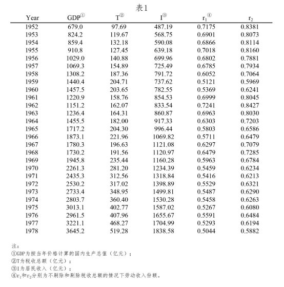
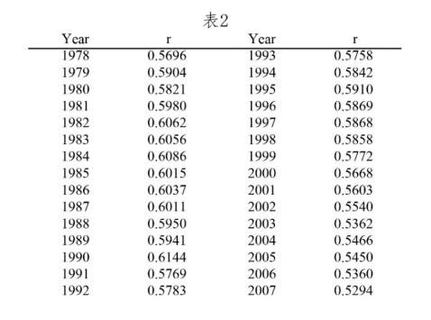
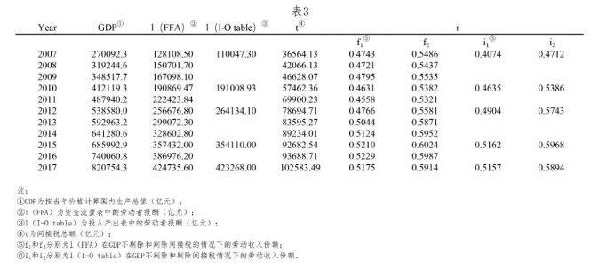
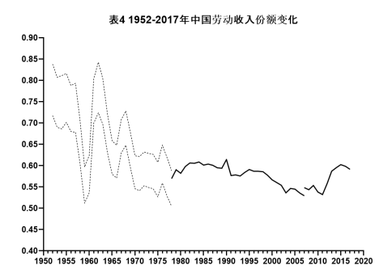

中国的劳动收入份额变化
劳动收入份额的计算公式：
r = l / (g - t)
其中，r为劳动收入份额，l为劳动收入，g为按收入法计算的当年GDP，t为间接税。
按照白重恩、钱震杰（2010）的解释，虽然劳动收入份额定义规定的是劳动者报酬占国民收入的份额，似乎使用GNI作为公式分母更为贴切，但选取GDP则更具有优势。其原因在于：一、GDP数据的更加容易获得，更容易进行跨地区跨国的比照；二、按收入法计算的GDP数据更明显地体现了国内生产的要素收入分布。目前大部分学者都认同以GDP取代GNI作为分母。至于分母中是否需要扣除间接税，当前学者之间意见并不一致，本文引用的白重恩、钱震节（2010）1978-2007年间的劳动收入份额数据采用的是扣除间接税的计算方法，为了保持一致，我在同时计算出两种情况下的劳动收入份额以供参考，但在表4中仅绘出扣除间接税情况下的劳动收入份额曲线。
数据来源及处理
1952-1978年阶段（见表1）：
此阶段数据上存在的困难最为明显，具体表现为两个方面：（1）国家没有公布投入产出表（I-O table）或者资金流量表(FFA），导致无法获得劳动者报酬的具体数据。我采取的解决办法是：使用居民收入（=工资性收入+经营性收入+财产性收入+其他）替代劳动报酬。考虑到1978年以前公有制经济在整体经济中占据着绝对地位，无论城乡，经营性、财产性和其他收入的比重占居民收入的比重都比较小，工资在居民收入中居于主体地位。因此，使用居民收入来代替劳动收入的误差当可接受。（2）国家税收统计口径较为笼统，占税收很大比例的工商税收和农业税收中都同时包含了直接税和间接税，因此无法得到明确的间接税数据。我采取的解决办法是：同时计算出扣除和不不扣除税收总额两种情况下的劳动收入份额，真实的劳动收入份额应在两者之间。因此，这一阶段的劳动收入份额仅仅是一个预测区间，在表4中以两段分别代表扣除和不扣除税收总额的虚线标示。
此外，我将此阶段的终止年份定为1978年，与下阶段（1978-2007）年重合一年，如果下阶段所采取的较为严谨的方法所得到的1978年劳动收入份额刚好包含在此阶段对1978年劳动收入份额的预测区间里，那么，采取预测区间的方法对1952-1978年劳动收入份额的刻画当可接受。
我所使用的国内生产总值和税收数据来自《新中国六十年来统计资料汇编》；居民收入数据来自艾春荣、汪伟（2008）的计算，他们根据《中国统计年鉴》与《新中国55年统计资料汇编》中支出法GDP数据，将居民消费数据和储蓄数据相加，得到居民收入。

1978-2007年阶段（见表2）：
全部使用了白重恩、钱震杰2010年发表于《China Economic Review》的论文“The factor income distribution in China: 1978-2007”上的最终数据。他们1978-1992年的劳动收入份额数据是根据省际数据求得省际劳动收入份额，然后加权平均得来；1993-2004年数据根据中国统计出版社2007年发行的《中国国内生产总值数据：1952-2004》计算得来，并且剔除了2004年统计方法的调整对劳动收入份额的影响；2005-2007年数据在假设2004年统计口径对此后各年的影响持续不变的情况下，对根据国家统计局发行的统计年鉴计算得到的劳动收入份额进行调整得来。

2007-2017年阶段（见表3）：
这一阶段资金流量表、投入产出表和各项税收数据较为完备，给计算带来了便利。除去2010年和2011年的劳动者报酬，我所使用的数据都来自国家统计局发布的2008至2019各年的统计年鉴。2013年统计年鉴所载资金流量表中的劳动者报酬显示为2010-2011年，却并未说明具体为哪一年的数据，所以2010年、2011年的劳动者报酬采用了国家统计局官方网站的数据库中更为确切合理的数据。
当前，国内对间接税的范围尚有争论。上阶段采用的白重恩、钱震杰（2010）的数据并未说明其选取的间接税口径。因此，这一阶段，我对间接税口径的选取参照了朱志钢、高梦莹（2013）的划定，具体来说，包括：国内增值税、国内消费税、进口货物增值税、进口货物消费税、营业税、关税、城市维护建设税收、资源税、印花税、烟叶税和船舶吨税。
这一阶段，我也使用了投入产出表中的劳动者报酬数据来计算劳动收入份额，但是由于我国的投入产出表间隔1-2年才更新一次，数据的连续性不及资金流量表。因此，表4中采用的仍然是以资金流量表数据计算的劳动收入份额。
需要注意的是，本阶段的数据计算默认采纳2004年公布的新统计方法，并未像白重恩、钱震杰（2010）在处理2004-2007年的数据时一样剔除了统计方法变化对数据份额的影响。此外，间接税的口径选取也未必一致。两个阶段的数据之间肯定存在误差，我特地将这一阶段的数据设置成从2007年开始，与上一阶段（1978-2007）重合一年，凸显两个阶段并未刚
好衔接，以避免数据选取和处理方法差异误导对劳动收入份额变化的判断。
1952-2017年中国劳动收入份额变化（见表4）
从表4中我们可以清晰地把握劳动收入份额在近70年间变化的总体趋势。1952-1978年间，劳动收入份额变化的特征是高份额、高波动、总趋势呈下行。高份额应该得益于我国公有制经济体制，高波动与数次经济建设的探索与失误息息相关，总趋势呈下行似乎反映了僵化的经济体制难以持久，国家机器只能侵蚀劳动收入以维持正常运转。1979-2007年间，劳动收入份额的变化总趋势像一条较扁的U型曲线，自80年代中期，总体呈下降趋势，直到2010年前后触底，随后以较大幅度开始爬升。2016年出现下降，其趋势尚待明晰。

参考文献：
[1]李晓超,严建辉总编,新中国六十年统计资料汇编,中国统计出版社,1949-2008,9,年鉴.
[2] 国家统计局编，中国统计年鉴2008-2019，中国统计出版社.网址： http://www.stats.gov.cn/tjsj/ndsj/
[3]艾春荣,汪伟.中国居民储蓄率的变化及其原因分析[J].湖北经济学院学报,2008,6(06):5-10+15.
[4]Chong-En BAI, Zhenjie QIAN, 2010."The factor income distribution in China: 1978-2007," China Economic Review, Elsevier, vol. 21(4), pages 650-670, December.
[5]朱志钢,高梦莹.论直接税与间接税的合理搭配[J].税务研究,2013(06):46-49.